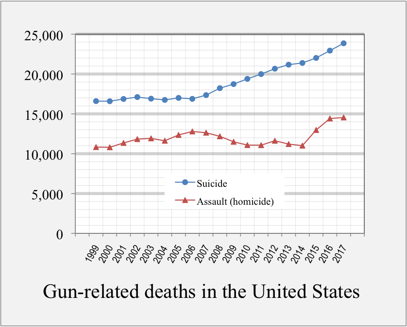

The USA has a lot of gun deaths. While mass shootings get the headlines, they actually make up a tiny fraction of the deaths. Suicide makes up 60%.
In 2017, the USA averaged 109 deaths by gun each day. That’s more than traffic accidents which killed 102.
The majority of gun deaths are suicides, averaging 65 deaths each day.
 Image source: https://en.wikipedia.org/wiki/Gun_violence_in_the_United_States
In 2017, the USA had a record number of deaths from mass shootings. Mass shootings are scary, but the total for the whole year was 117 deaths. That year’s worth of mass shootings is exceeded by 2 days of suicides. The deadliest mass shooting in the USA was the attack in Las Vegas on Oct. 1ˢᵗ 2017, where 58 people died. On average, more die each day from suicide than died in our worst mass shooting.
Most people want to ignore suicide, thinking that it poses no harm to them. There is not just one victim in a suicide — the collateral damage hurts family, friends, and even strangers. I was hoping to find numbers on this, but I didn’t find anything I like. I can speak of what I’ve seen: A coworker drank heavily for years after someone committed suicide by walking in front of his car. A close family was chronically sad after their son’s/sibling’s intentional overdose. And a friend was traumatized after walking in on a classmate who “swallowed a shotgun”.
Guns make suicide one of our most damaging diseases. In a previous post, I said the proper way to measure a disease is using DALYs. By that metric, suicide is the #9 disease in the USA. More than half of all suicide deaths are a result of guns. Most despondent people try to kill themselves by overdosing, poison, or cutting themselves. Luckily, less than 2% of those attempts are successful. Only 6% of suicide attempts use a gun, but those attempts are overwhelmingly fatal.
Laws can help, without taking away most guns. Waiting periods lowered suicides by 2 to 5%. In Missouri, requiring a license to own a gun lowered suicides by 15%. So-called “red flag” laws allow police to take guns from those at risk of harming themselves or others. Police in Indianapolis seized an average 60 guns a year (in a city of roughly 1,000,000 people) and it lowered the suicide rate 8%.
[Public Service Announcement: You can help without a law. Suicide can be an impulsive act. If you know someone at risk who owns a gun, ask them to give it to a friend for safe keeping.]
The USA has a lot of gun deaths and 60% are suicides. Because of guns, suicide is a Top 10 disease. We can pass laws that deter despondent people from killing themselves, with minimal effect on most gun owners. While mass shootings do not make up a large part of gun deaths, most mass shooters have discussed or attempted suicide. So, I have hope that these laws may reduce those too.